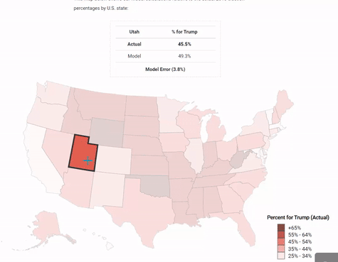
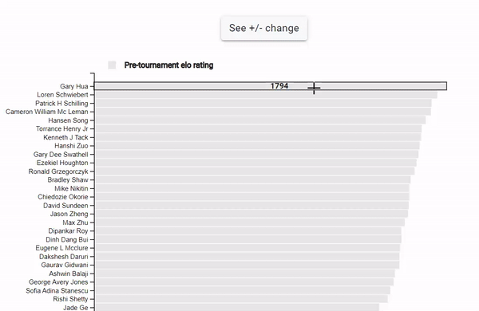
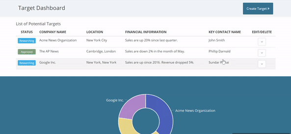

Projects
Front-end Specifications
Most of my projects utilize a combination of D3.js and Angular 2+ for my front-end work

+

A Value Based Linear Regression Model to Predict the 2016 Presidential Election
Overview
A classmate and I created a predictive model that calculates the proportion of votes for Donald Trump in the 2016 election based on responses to a select number of value-based questions from the American Values Survey, administered by the Public Religion Research Institute (PRRI) in 2017. We used R to manipulate our data, run our regression models, and calculate our predictions. I used D3.js to create a map of our model's performance against the actual percentage of voters that voted for Donald Trump in each state.
From Text File to D3.js Visualization
Overview
As part of a graduate school assignment, we were given a raw text file and were asked to convert it into a clean dataset using R. We also were instructed to create visualizations and do some basic analyses. I decided to also create a mock news story about the dataset and a d3.js visualization.
Full Stack CRUD Application to Track Business Acquisitions
Overview
A full stack application developed to keep track of potential business acquisitions. This application utilizes Angular 2+ for all front-end work, with Node.js and MongoDB for all back-end work. It features reactive forms, and a visualization comparing target revenues. This was built in one week as part of a sprint.